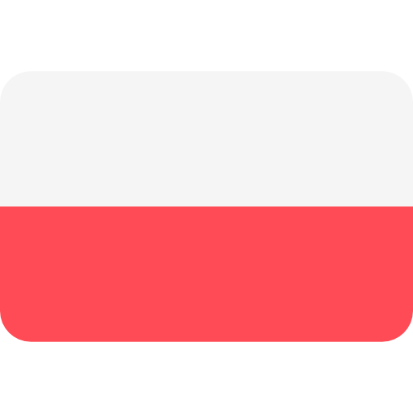

Moje projekty
Counting Your Age

This simply program will show you how many months, days, hours, minutes and seconds you have.

Ten prosty program pokaże Ci ile masz miesięcy, dni, godzin, minut i sekund.
Zobacz
Sewer Pipe Gradient

Program calculating the gradient of the sewer pipe.
You have to enter your unit, first and second pipe level and pipe length.
Program obliczający spadek rury kanalizacyjnej.
Musisz wprowadzić jednostkę, pierwszy oraz drugi poziom/rzędną oraz długość rury.
Zobacz
Amount of Sewage

This application can calculate the sanitary sewage flow needed for your polish public health project.
This program can sum up all flows and give us the exact result.
Calculations are based on polish standards PN-EN 12056-2.
Ta aplikacja może obliczyć przepływ ścieków sanitarnych dla Twojego projektu "instalacji wod-kan".
Program potrafi zsumować wszystkie przepływy i dać nam dokładny wynik.
Obliczenia oparte są Polską Normą PN-EN 12056-2.
Zobacz
Responsive Web Design CSS style

Responsive Web Design CSS style using media queries.
Responsywny styl projektowy stron CSS oparty o "media queries".
Zobacz
HTML5 CSS3 table

This is an example of CSS3 style for HTML5 tables.
Przykład tabelki w HTML5 oparty o styl CSS3.
Zobacz
First JavaFX Project


My first Java FX Project. It's upgraded traditional Hello Application with GUI - Graphic User Interface.
Mój pierwszy projekt w JavaFX. Jest to ulepszona wersja tradycjnej aplikacji "Hello" z Graficznym Interfejsem Użytkownika.
Zobacz
CSS Golden Neon Button Effect

It is CSS style for golden neon button effect.
Styl CSS dla złotego, neonowego przycisku.
Zobacz
Shooting range


Shooting range application with 3 level shooting target: 100, 50 and 20 points.
Aplikacja "Strzelnica" z 3 poziomami celów: 100, 50 i 20 punktów.
Zobacz
My own history


JavaFX Application with short story. Live text typing app.
Aplikacja JavyFX z krótką historyjką. Aplikacja do wpisywania tekstu "na żywo".
Zobacz
CSS3 Button Styles

CSS3 Button Styles for HTML websites.
Style CSS3 przycisków dla stron internetowych HTML.
Zobacz
Encoding & decoding App


Homework 1 for subject INU from Warsaw University of Technology. Encoding and decoding application which can encode "AAAbbbCC" to "A3, b3, C2" and decode again from 2nd to 1st version.
Praca domowa 1 na przedmiot INU z Politechniki Warszawskiej. Kodująca i dekodująca aplikacja, która potrafi zakodować "AAAbbbCC" do "A3, b3, C2" i odkodować ponownie z drugiej do pierwszej wersji.
Zobacz